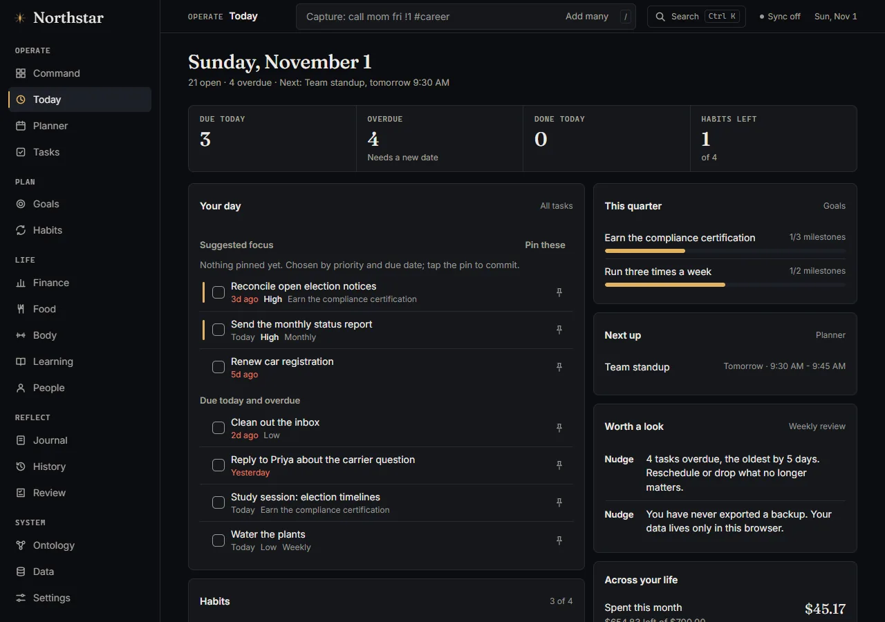

Today
Your day on one screen.
- A strip of due today, overdue, done today and habits left, so you see where the day stands in a second.
- Suggested focus is chosen by priority and due date; pin the ones you commit to.
- Next event, quarter goal progress and gentle nudges (for example overdue tasks, no backup yet) sit beside the list.
